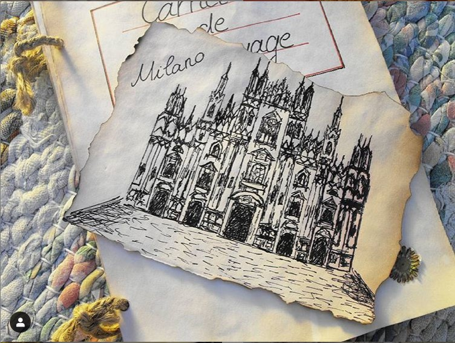
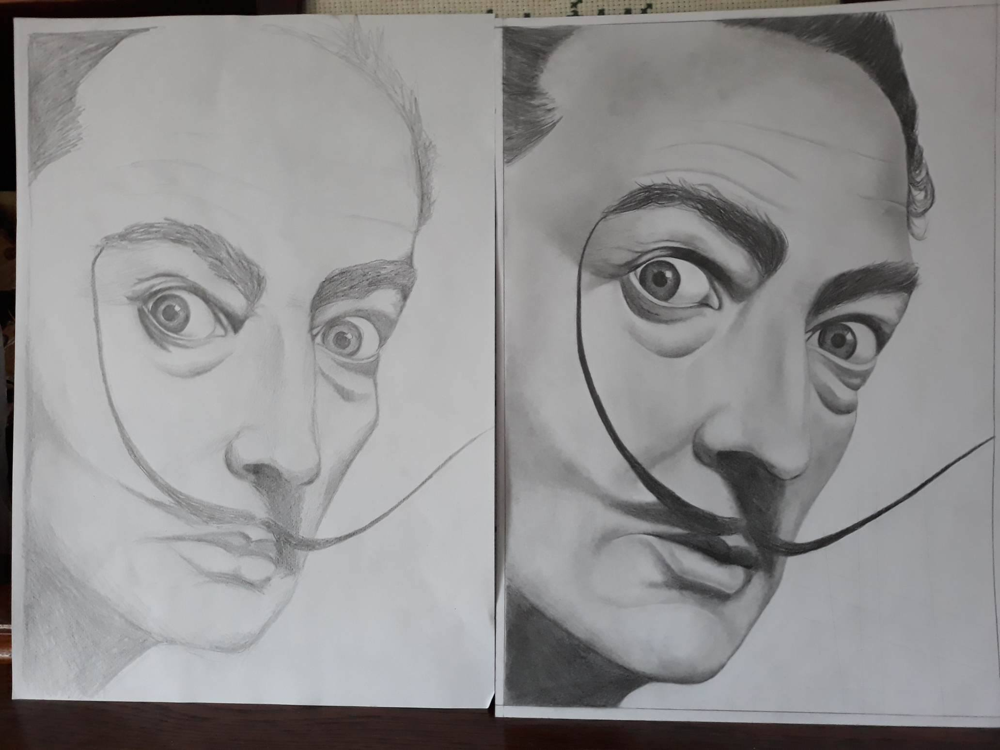
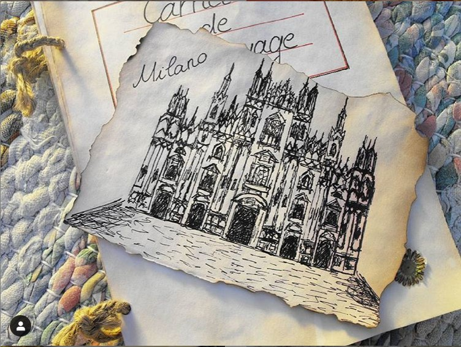
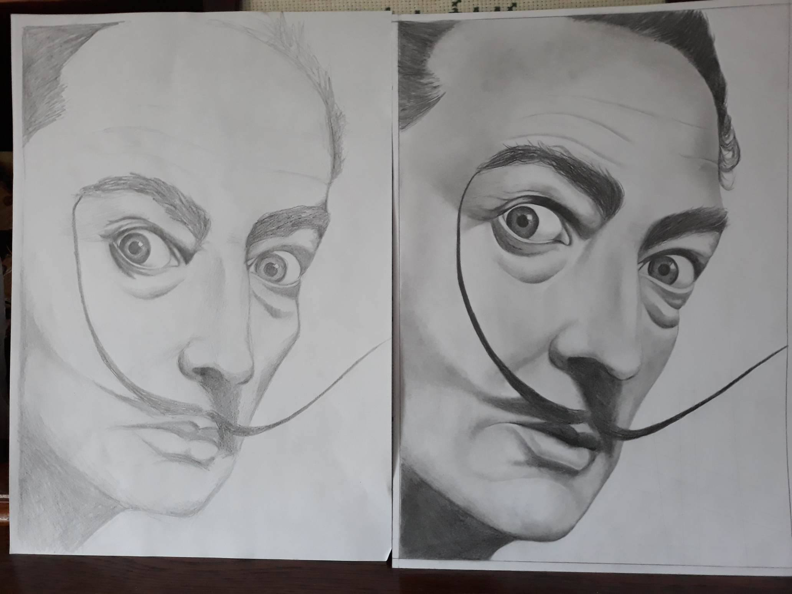

Rajzaim:
A rajzolás és a festés szintén egy hétköznapi tevékenységem, ez nagyban segít abban, hogy egy kicsit kikapcsoljak egy pörgősebb hétköznap után.
Fél éve részt vettem egy jobb agyféltekés rajztanfolyamon,ahol fejleszthettem portrérajzolási képességeimet, de jelenleg főleg a kockológiai ábrázolások kötnek le, és ezt a színek vegyes használatával, valamint színes lapra való rajzolással próbálom érdekesebbé tenni.

 


